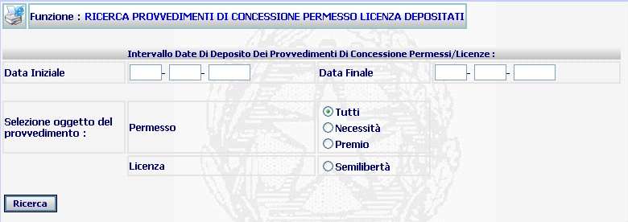
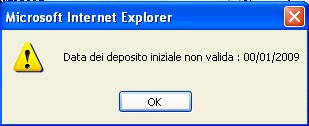
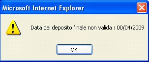
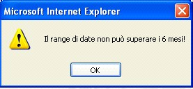

RELAZIONE TRIMESTRALE - RICERCA PROVVEDIMENTI DI CONCESSIONE PERMESSO/LICENZA DEPOSITATI: La funzione consente di operare la ricerca dei provvedimenti relativi a permessi/licenze depositati durante un lasso temporale, è inoltre possibile effettuare un tipo di ricerca più mirata selezionando l'oggetto del provvedimento.
LE MASCHERE VIDEO
La funzione di RICERCA PROVVEDIMENTI DI CONCESSIONE PERMESSO/LICENZA DEPOSITATI viene realizzata attraverso la maschera seguente:

COME FARE PER ...
Per effettuare la ricerca dei provvedimenti di concessione permesso/licenza depositati in un determinato intervallo temporale l'utente deve compilare i campi relativi alle date di deposito iniziale e finale

N.B.: Il sistema è impostato con la voce "TUTTI" già selezionata affinché effettui un tipo di ricerca atta a rilevare tutti i provvedimenti relativi ai soli permessi senza distinzione fra premio e necessità.
CAMPI
I dati attraverso i quali è possibile effettuare la ricerca sono i seguenti:
| Data iniziale - Data finale | Campo (obbligatorio) attraverso il quale si può inserire l'intervallo temporale al quale si vuole limitare la ricerca. |
PULSANTI
E' presente il pulsante
 di stampa del contesto (videata)
di stampa del contesto (videata)
BOTTONI
Oltre ai comandi funzionali relativi al menù verticale sono presenti i seguenti comandi:
|
COMANDI |
DESCRIZIONE |
|
|
A fronte di tale comando, il sistema effettua la ricerca con i criteri impostati e visualizzerà l'elenco dei provvedimenti di concessione permessi licenza |
CONTROLLI
A fronte della pressione
sul bottone
 ,
il sistema verifica che tutti i campi relativi alle date siano stati compilati correttamente,
diversamente presenterà i seguenti avvisi:
,
il sistema verifica che tutti i campi relativi alle date siano stati compilati correttamente,
diversamente presenterà i seguenti avvisi:


